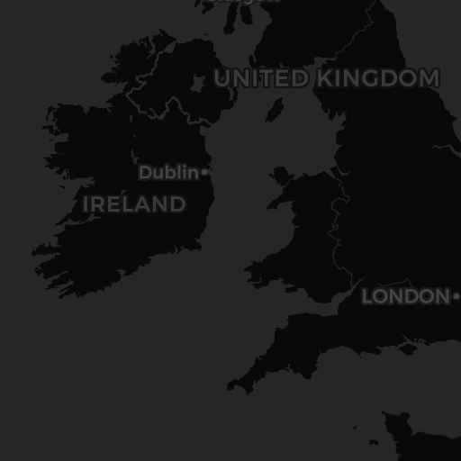

昼の月。AIソムリエ
🏠 AIソムリエ
🥃 ウィスキー一覧
🍷 プレミアムウィスキーコレクション
本日は厳選された
6
本のウィスキーから
あなたの味覚に完璧にマッチする
最高の一本を
AI技術で分析・提案いたします
6
厳選銘柄
5
産地
AI
分析技術
💎 価格帯設定
下限価格:
¥5,000
上限価格:
¥50,000
👅 味覚プロファイル設定
2つの四角内をクリックして、それぞれの好みの位置を選択してください
🥃 基本的な味の傾向
フルーティー
スモーキー
ライト
ヘビー
座標: X: 0.37, Y: 0.41
🎯 複雑さの好み
まろやか
強烈
若い
熟成
座標: X: 0.15, Y: 0.86
🤖 AIソムリエとチャット（何度でもお気軽に！）
質問例（クリックで入力）：
💎 タリスカー44年（最高額80,400円）について詳しく教えて
🌊 3000円以下でスモーキーなアイラ島のウィスキーはある？
🍯 日本の軽井沢や長濱などフルーティーなウィスキーを比較して
⭐ 5000円前後でcomplexity5点の複雑なウィスキーのおすすめは？
🎤
💬 質問する
🎯 AIウィスキー提案を受ける
🔄 リフレッシュして再提案
🥃
AIが最適なウィスキーを分析中...
結果を生成中...
100%
🎯 AI提案結果
🎯 あなたの好みの傾向
基本的な味の傾向:
バランスの取れたフルーティーさとスモーキーさのバランスが取れた
複雑さの好み:
若い強烈な複雑さを好む
価格帯:
¥5,000 - ¥50,000
この総合プロファイルに基づいて、最適な3銘柄を厳選しました。
🔄 別の提案
📊 味覚プロファイル比較
あなたの好み
ウィスキーの銘柄をクリックすると、あなたの好みと重ねて表示されます
🌍 蒸留所情報

+
−
Leaflet
| ©
OpenStreetMap
contributors ©
CARTO
蒸留所名
所在地:
-
創業年:
-
現在の状況:
-
情報がありません。